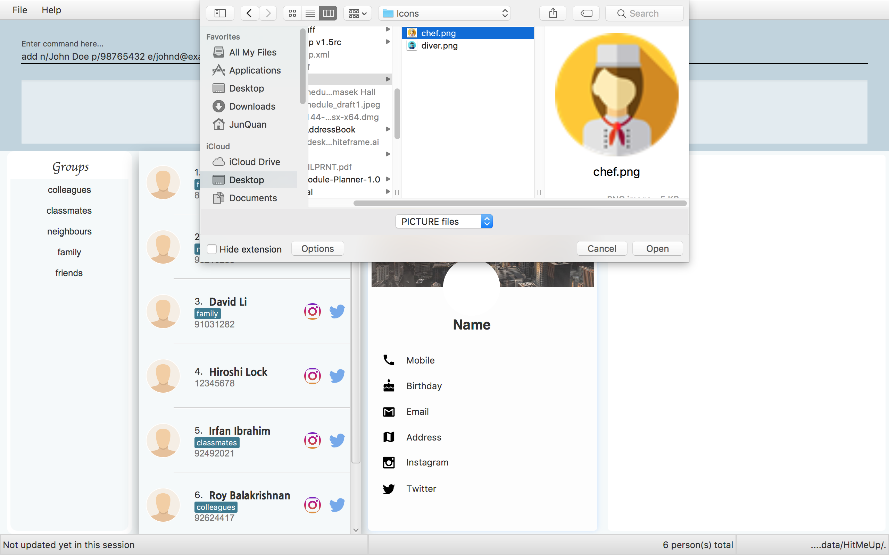
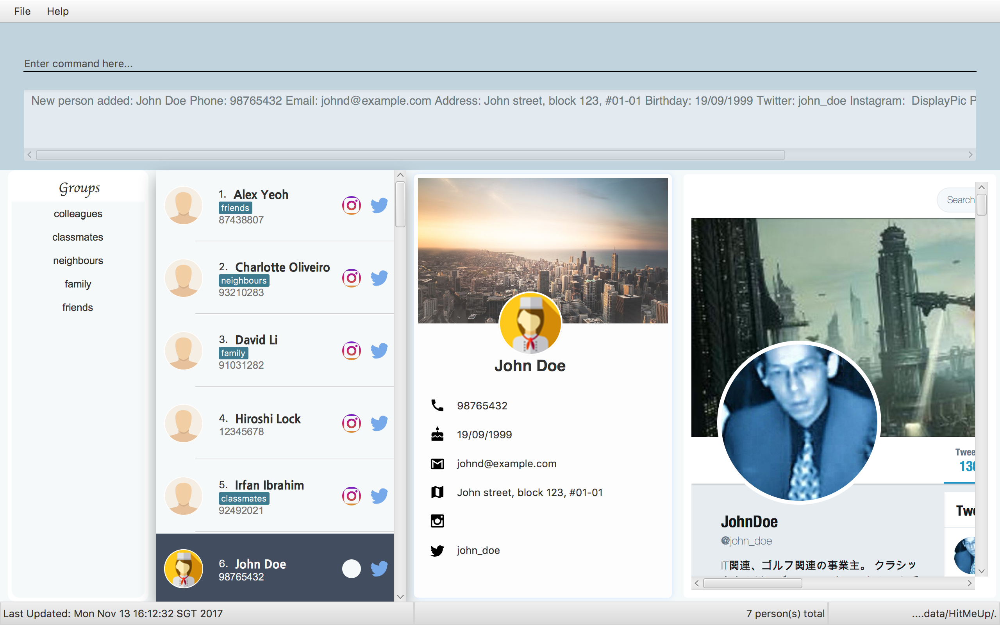
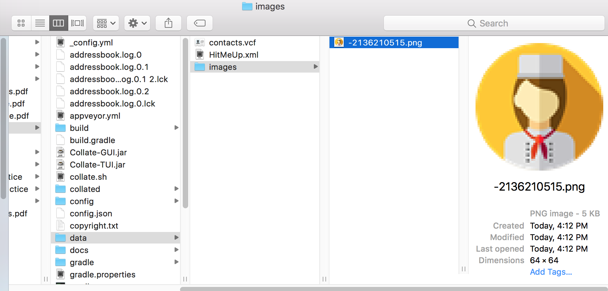
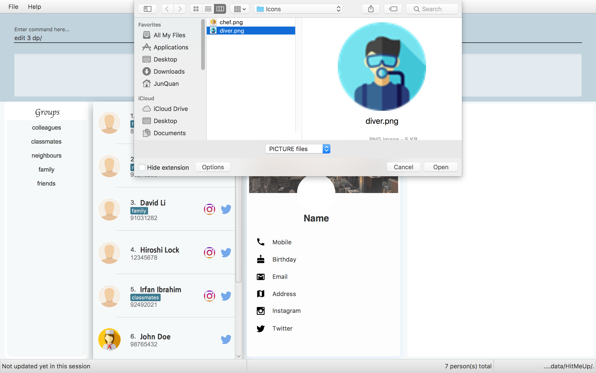
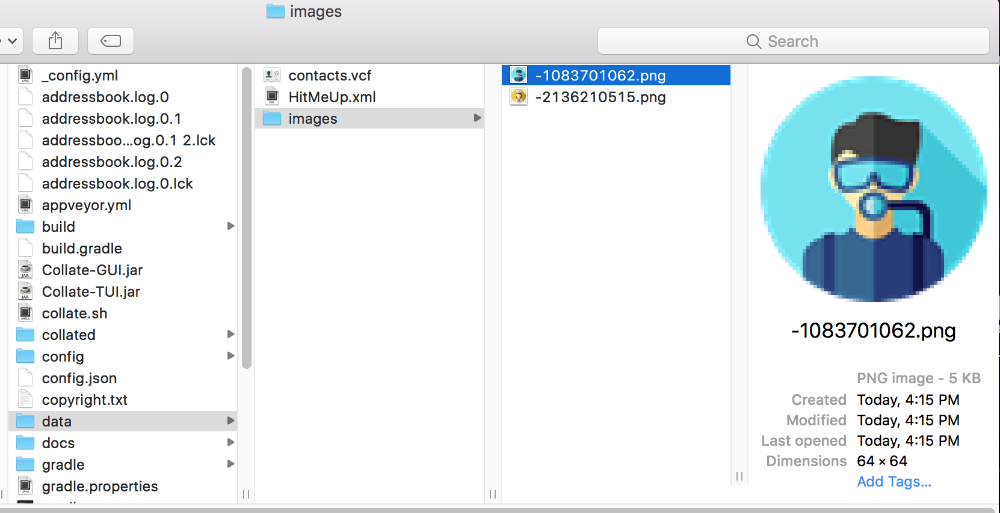

Project: AddressBook - Level 4
HitMeUp is an address book application designed with the sociable user in mind. It aims to provide a one stop solution for every need: To contact, keep up and organise. With the cloud import feature, a user would be able to get the application up and running a matter of minutes. Being able to group your contacts, and view each group at a glance affords convenience like never before. Social integration to Instagram and Twitter is baked in, allowing users to view profiles in the application itself without having to switch to a browser or check their phone.
Code contributed: [{repoURL}/tree/master/collated/main/JunQuann.md[Functional code]] [{repoURL}/tree/master/collated/test/JunQuann.md[[Test code]]
Enhancement Added: Developed the Graphic User Interface

Justification
An user interface based on material design will allow a good user experience as it is aesthetically pleasing.
Adding a person: add
Adds a person to the application.
Format: add n/NAME p/PHONE_NUMBER [e/EMAIL] [a/ADDRESS] [b/BIRTHDAY] [tw/TWITTER] [ig/INSTAGRAM] [dp/] [t/TAG]…
| A person can have any number of tags (including 0). |
| If you do not have a display picture to add, leave out the dp/ prefix. |
Example:
-
add n/John Doe p/98765432 e/johnd@example.com a/John street, block 123, #01-01 b/19/09/1999 tw/john_doe dp/-
Pops up the file chooser for user to choose the image they want to set as display picture.
 -
Adds a person called John Doe with a phone number of 98765432, an email address of johnd@example.com, an address of John street, block 123, #01-01, a Twitter username of john_doe. John Doe is also added with the image chosen as his display picture.
 -
The image is copied into the designated display picture storage directory with a unique name.

-
Editing a person : edit
Edits an existing person in the application.
Format: edit INDEX [n/NAME] [p/PHONE] [e/EMAIL] [a/ADDRESS] [b/BIRTHDAY] [tw/TWITTER]
[ig/INSTAGRAM] [dp/] [t/TAG]…
Examples:
-
edit 1 p/91234567 e/johndoe@example.com
Edits the phone number and email address of the 1st person to be91234567andjohndoe@example.comrespectively. -
edit 2 n/Betsy Crower t/
Edits the name of the 2nd person to beBetsy Crowerand clears all existing tags. -
edit 3 dp/
-
Pops up the file chooser for user toc hoose the image they want to set as display picture.
 -
Display picture of the 3rd person is changed to the chosen image.

-
The image is copied into the designated display picture storage directory with a unique name.

End of Extract
Justification
Having a display picture for each contact not only beautify the User Interface but also help users to remember their contacts easily.
Display Picture Mechanism
This feature is facilitated by javafx FileChooser and java IO class. It supports choosing of images from hard disk via a pop up and
copies the chosen image into the designated image storage folder indicated in UserPref. The chosen image will then be displayed
in the GUI for reference to the specific contact.
Display picture implementation
This section will discuss the implementation of the display picture feature.

Figure 5.5.1 shows a sequence diagram of editing the display picture of a person
From the diagram above, we can see that additional work is done at ArgumentTokenizer in order to get the final display picture path with resides in the designated display picture file directory.
Since ArgumentTokenizer is only called in AddCommandParser and EditCommandParser, writing dp/ in other command will not cause the display picture feature to be called.
When dp/ is present in the command, getCurrentImgPath will be called. This function returns the path of the image that the user want to set as his display picture. Afterwards,
createUniqueDisplayName will create a unique name for the image chosen by hashing all the other fields of the person.
private static String createUniqueDisplayPicName(ArgumentMultimap argMultimap, String currentImgPath, Prefix... prefixes) {
String displayPicName = currentImgPath;
for (Prefix prefix : prefixes) {
displayPicName += argMultimap.getValue(prefix);
}
return String.valueOf(displayPicName.hashCode());
}Since duplicated users cannot be added, by hashing all the fields of a person, we can ensure that a unique hashcode is created which will then be used as the filename for the image.
This is to ensure that images in the display picture file folder will not be overwritten as files with same name will overwrite each other.
Afterwards, getFinalImgPath will return the display picture file path that has been copied to the designated display picture folder. This path will be the value for the prefix dp/, which will be parsed into the respective command parsers.
Event processes for choosing and copying of display picture
This section will discuss the flow of events when users wants to select display pictures for their contacts.

Figure 5.5.2a shows the interaction between components for edit 1 dp/ command (part 1)
The above diagrams shows the series of event when ArgumentTokenizer detects the prefix dp/.
The following code snippets will show how the events are posted within each methods.
private static String getCurrentImgPath() {
FileChooserEvent fileChooserEvent = new FileChooserEvent();
EventsCenter.getInstance().post(fileChooserEvent);
return fileChooserEvent.getImgPath();
}getCurrentImgPath posts the FileChooserEvent which will be handled by UI to retrieve the path of the chosen image for the display picture.
private static String getFinalImgPath(String hashedDisplayPicName, String imgPath) {
NewImageEvent newImageEvent = new NewImageEvent(hashedDisplayPicName, imgPath);
EventsCenter.getInstance().post(newImageEvent);
return newImageEvent.getImagePath();
}getFinalImgPath posts the NewImageEvent which will be handled by Storage to retrieve the final display picture path in the designated display picture directory.
The following diagram shows how the the events posted previously are being handled:

Figure 5.5.2b shows the interaction between components for edit 1 dp/ command (part 2)
When FileChooserEvent is posted, it will be handled by UI and the method getDisplayPicPath will be called.
private String getDisplayPicPath() {
FileChooser fileChooser = new FileChooser();
FileChooser.ExtensionFilter extFilter = new FileChooser.ExtensionFilter("PICTURE files", "*.jpg", "*.png");
fileChooser.getExtensionFilters().add(extFilter);
File selectedFile = fileChooser.showOpenDialog(primaryStage);
if (selectedFile != null) {
return selectedFile.getAbsolutePath();
} else {
return DEFAULT_DP;
}
}This method will initiate a pop up in the GUI of HitMeUp for the user to choose the image they want to use. Afterwards, it returns the absolute path of the chosen image.
Afterwards, NewImageEvent will be posted and handled by Storage, the method copyImageFile will be called.
public void copyImage(String currentImagePath, String imageName) throws IOException {
File currentImage = new File(currentImagePath);
BufferedInputStream bis = new BufferedInputStream(new FileInputStream(currentImage));
createImageDir();
String newImagePath = getImageFilePath(imageName);
BufferedOutputStream bos = new BufferedOutputStream(new FileOutputStream(newImagePath));
int data;
while ((data = bis.read()) != -1) {
bos.write(data);
}
bis.close();
bos.close();
}This method will copy the chosen image into the designated display picture storage folder and return the path to the copied image. The returned path will be stored as the display picture value of a person.
Design Considerations
Aspect: When to implement the feature
Alternative 1 (current choice): Prompts for display picture when parser detects dp/ in add or edit commands
Pros: Natural flow of event as users can decide to add a display picture while adding the person
Cons: Much more complex implementation is needed as we have to intercept the parsing of add or edit commands to add information for display picture
Alternative 2: Have a separate command DisplayPic [INDEX] to select a display picture for the person at INDEX after adding the person
Pros: Easier implementation as it is very similar to the existing edit command
Cons: Troublesome as users will need 2 step to add a display picture for their contacts
Aspect: How to select display picture
Alternative 1 (current choice): Use a FileChooser and allow Users to select the file
Pros: Convenient for users as to select the file
Cons: No longer a CLI interface
Cons: Hard to deploy JUnit testing as there are not way to automate the choosing of files in FileChooser
Alternative 2: Users find the path of the file themselves and add it into the command
Pros: CLI interface
Cons: Hard for users who are not tech-savvy to find know the path of the image file
Aspect: How is chosen image made accessible in the storage
Alternative 1 (current choice): Copying the chosen image into the designated storage path
Pros: Image will still be present at original path for users to use the image
Cons: Inefficient memory usage as duplicate copy of the same image is made
Alternative 2: Moving the chosen image to the designated storage path
Pros: Efficient memory usage as duplicate copies will not be created
Cons: Users may have difficulty finding the chosen image for later use as they will be renamed to prevent overwriting of image in the designated storage
End of Extract
Enhancement Proposed:
Delete the picture in display picture storage directory when the image is not used anymore.
Other contributions
-
Made UI MockUp based on material design using Adobe PhotoShop.

Picture above shows mock up UI for HitMeUp
-
Added PersonDescriptionPanel in User Interface
Figure above shows the GUI of HitMeUp, PersonDescriptionPanel is outlined in red
-
Added DisplayPic field for person
-
Wrote test cases for all features that were implemented by me.